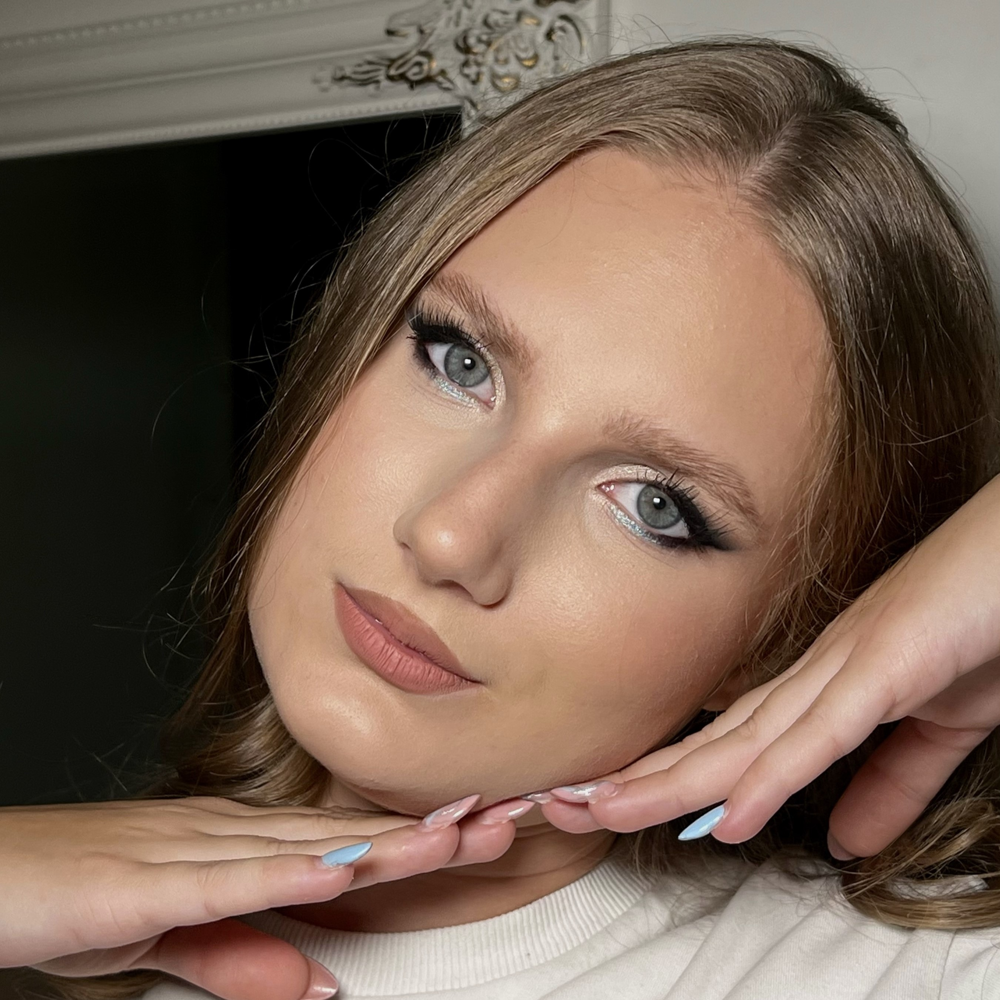
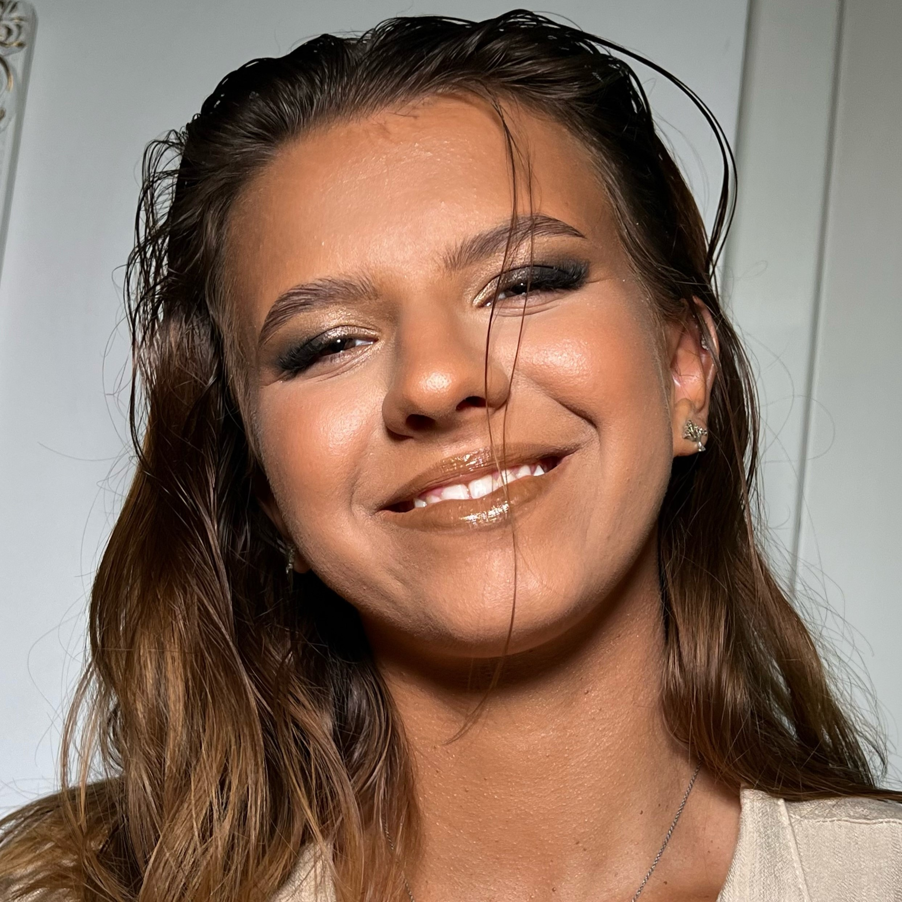
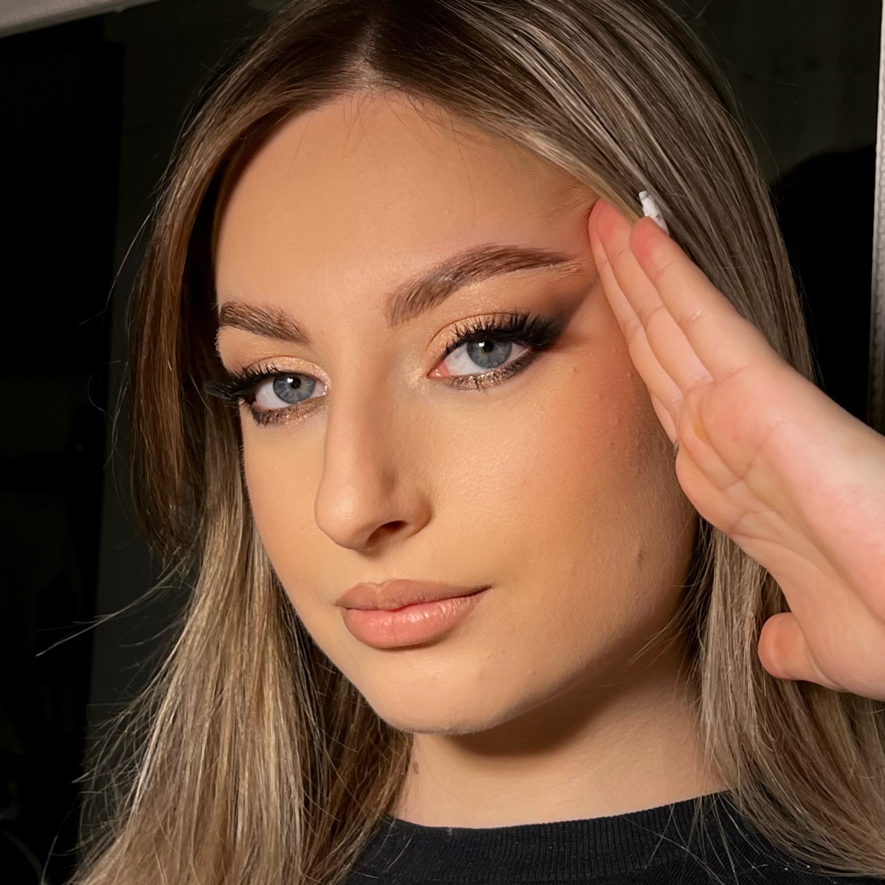
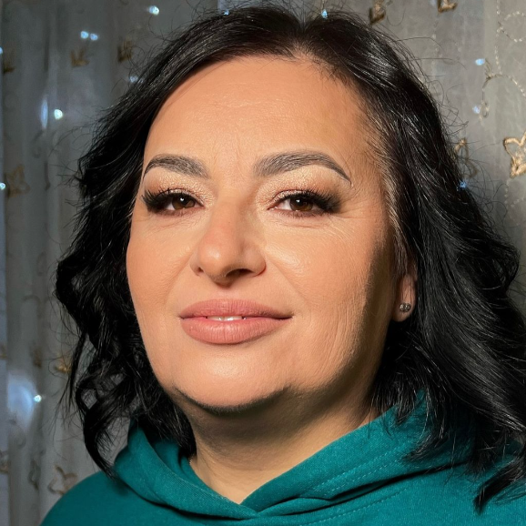
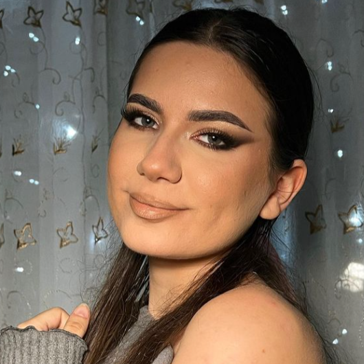
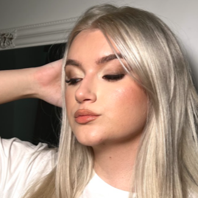
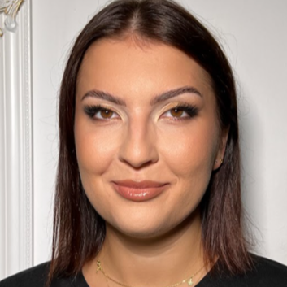
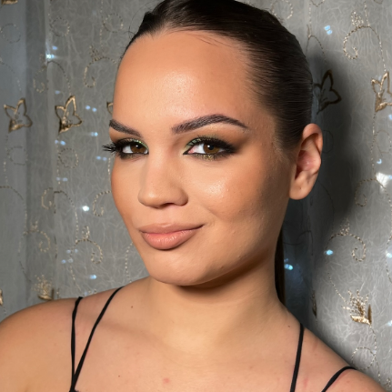
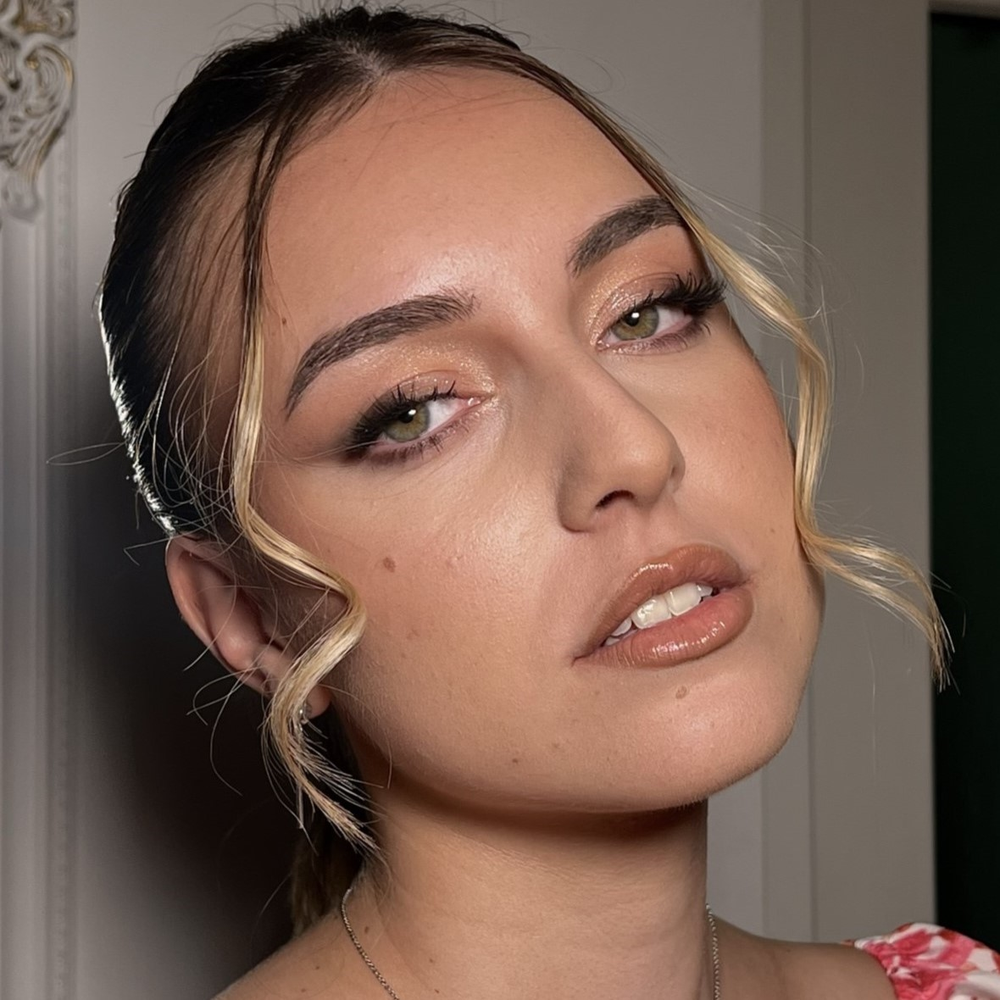
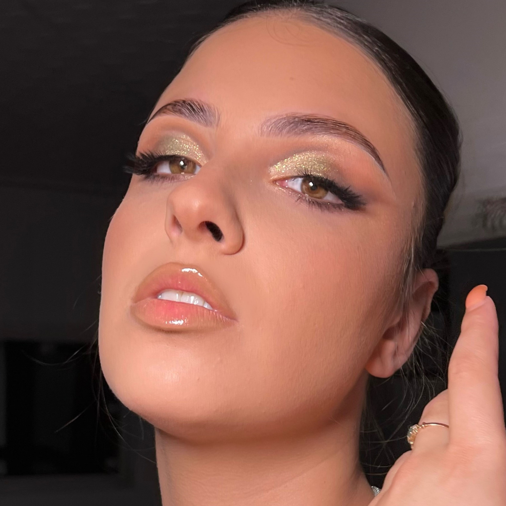

Alexandra
Servicii de Makeup
Recomand!! Machiajele pe care le face sunt impecabile, rezistente și nu mi-am simțit niciodată tenul prea încărcat❤️❤️
De fiecare dată a pus accentul pe dorințele mele și rezultatul ieșea unul superb🥰

Miruna
Servicii de Makeup
Pentru mine, o persoană care nu se machiază regulat, opera Denisei m-a
surprins. Chiar dacă ne cunoaștem de mult, am simțit o atitudine foarte
profesională și m-am simțit foarte bine pe tot parcursul procesului. Aș
spune că m-a făcut să mă simt foarte frumoasă chiar dacă am o părere bună
despre mine în general.
Recomand din tot sufletul să apelați la ea pentru orice ocazie!

Carla
Servicii de Makeup
A rezistat foarte bine, pot spune ca e aproape intact, nu s-a stricat nimic la el
deși aseara nu m-am mai demachiat și acum e a doua zi după-masa. Nu am avut nici
o problemă, ba chiar mi l-a și lăudat lumea. Deci sincer, din toate fetele de pe
acolo, să știi că am avut cel mai fain și deosebit machiaj.

Eugenia
Servicii de Makeup
A fost impecabil, a rezistat foarte bine. M-am demachiat aseară, l-aș mai
fi ținut dar mergeam la lucru. Ești o talentatâ. Și fetele mi-au spus că nu observă
că am fond de ten pe față, foarte natural.🥰🥰

Lorena
Servicii de Makeup
Denisa este o artistă desăvârșită a machiajului! Abilitatea ei de a crea look-uri personalizate este impresionantă, iar atenția la detalii se reflectă cu fiecare nuanță echilibrată. Cu o pasiune evidentă pentru acest lucru, ea transformă fețele în opere de artă, evidențiind trăsăturile unice ale fiecăruia. Experiența și abilitățile ei aduc un plus de încredere și frumusețe clienților săi.
Este, fără îndoială, o make-up artistă excepțională și o recomand tuturor! ❤️
Roxana
Servicii de Makeup
Mi-a plăcut foarte mult, iar machiajul a rezistat perfect!

Andreea
Servicii de Makeup
Machiajul pe care mi l-a făcut Denisa a ținut extraordinar de bine.
Mi-a plăcut foarte mult felul in care lucrează, a fost foarte atenta la detalii, la ideile pe care i le-am propus și a reușit sa realizeze exact ceea ce îmi doream. Produsele pe care le folosește tin foarte bine. Am avut un machiaj impecabil toată seara!
Mi-a plăcut mult mult de tot și recomand cu toată încrederea ! ❤️

Dana
Servicii de Makeup
A rezistat totul super! Mi-a plăcut maxim! ❤️

Ariana
Servicii de Makeup
Mi-a plăcut foarte mult, a fost exact pe gustul meu😘 si majoritatea
persoanelor cu care m-am vazut m-au intrebat unde m-am machiat,
pentru ca le-a placut si lor. Merci mult de tot înca o data ❤️❤️

Teodora
Servicii de Makeup
Am avut ocazia de a fi model pentru un machiaj natural la Denisa. Am fost surprinsă de look-ul elegant al machiajului și de aspectul
natural care punea in evidență trăsăturile feței.
Mai mult, machiajul a fost foarte rezistent fără a lasă impresia unui ten
incarcat, iar Denisa este foarte drăguța și prietenoasa, ceea ce face experiența
si mai plăcută!

Diana
Servicii de Makeup
Machiajul a ținut foarte bine chiar și după duș. Denisa m-a machiat prima dată
în 2017 și nu am fost dezamăgită niciodată.❤️❤️❤️